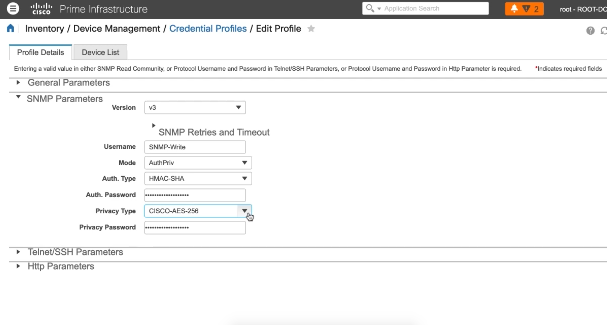
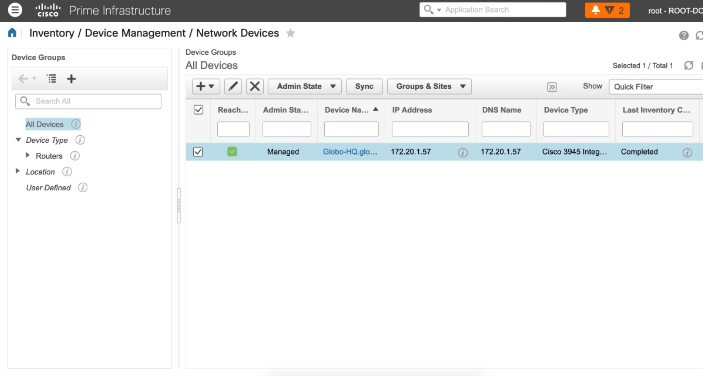

Configuring Management Protocols on a Cisco IOS Device¶
Configuring SNMPv3 Users on a Cisco Router or Switch¶
SNMPv3¶
SNMP Users
Defines credentials and algorithms
SNMP Groups
Associates with SNMP Users with SNMP Views
SNMP Views
Defines the information that the SNMP user can access
All information is stored in the Management Information Base (MIB)
Object Identifiers (OID) correspond to specific information about a router
OIDs are stored in a hierarchical tree. OIDs lower in the tree are included with OIDs above it

SNMP Configuration on Cisco Prime¶
Globo-HO(confia)#snmp-server view EVERTHING iso included
Globo-HQ(config)#snmp-server group Write-EVERYTHING v3 priv read EVERYTHING write EVERYTHING
Globo-HQ(config)#snmp-server user SNMP-Write Write-EVERYTHING v3 auth sha Globo123 priv aes 256 Globo123

Syncronization Complete¶
Configuring NTP Authentication¶
Globo-HQ(config)#ntp server vrf Mgmt-intf 172.20.1.51
Globo-HQ(config)#ntp authentication-key 1 md5 Globo123
Globo-HQ(config)#ntp trusted-key 1
Globo-HQ(config)#ntp authenticate
Globo-HQ(config)#ntp server vrf Mgmt-intf 172.20.1.51 key 1
Globo-HQ(config)#do show ntp associations detail
Securing CDP on a Cisco Router or Switch¶
Globo-Core#show cdp neigh
Globo-Core#show cdp neigh gi 0/1 detail
Globo-HQ(config)#no cdp run
Globo-HQ(config)#cdp run
Globo-HQ(config)#int gi 0/1
Globo-HQ(config-if)#no cdp enable
Globo-HQ(config-if)#cdp enable
Globo-HQ(config-if)#exit
Globo-HQ(config)#cdp tlv-list Mgmt-Only
Globo-HQ(config-tlv-list)#address
Globo-HQ(config-tlv-list)#capability
Globo-HQ(config-tlv-list)#cos
Globo-HQ(config-tlv-list)#duplex
Globo-HQ(config-tlv-list)#ext-port
Globo-HQ(config-tlv-list)#hell
Globo-HQ(config-tlv-list)#ip
Globo-HQ(config-tlv-list)#nativ
Globo-HQ(config-tlv-list)#plat
Globo-HQ(config-tlv-list)#port
Globo-HQ(config-tlv-list)#power
Globo-HQ(config-tlv-list)#powernet
Globo-HQ(config-tlv-list)#spare-
Globo-HQ(config-tlv-list)#trust
Globo-HQ(config-tlv-list)#version
Globo-HQ(config-tlv-list)#vtp
Globo-HQ(config-tlv-list)#vvid
Globo-HQ(config)#int gi 0/1
Globo-HQ(config-if)#cdp filter-tlv-list Mgmt-Only
Globo-Core#clear cdp table
Globo-Core#show cdp neigh
Globo-Core#show cdp neigh gi 0/1 detail
Device ID: Globo-HQ.globomantics.com
Entry address(es):
Interface: GigabitEthernet0/1
Holdtime 135 sec
advertisement version: 2
Management address(es):
IP address: 172.20.1.57
Total cdp entries displayed 1
Using SCP to Transfer Files¶
Globo-HQ(config)#ip ssh source-interface gig 0/1 Globo-HQ(config)#exit Globo-HQ#dir Globo-HQ#copy startup-config scp: Address or name of remote host []? 172.20.1.15 Destination username [caleb]? Destination filename [globo-hq-confg]? Writing globo-hq-confg Password:
Configuring DHCP and DNS on an IOS Device¶
Globo-Core(config)#int vlan 172
Globo-Core(config-if)#ip add 172.20.1.189 255.255.255.0
Globo-Core(config-if)#no shut
Globo-Core(config-if)#exit
Globo-Core(config)#ip dhcp excluded-address 172.20.1.1 172.20.1.200
Globo-Core(config)#ip dhcp excluded-address 172.20.1.210 172.20.1.255
Globo-Core(config)#ip dhcp pool Mgmt-Hosts
Globo-Core(dhcp-config)#network 172.20.1.0 255.255.255.0
Globo-Core(dhcp-config)#default-router 172.20.1.1
Globo-Core(dhcp-config)#dns-server 172.20.1.57
Globo-Core(dhcp-config)#domain-name globomantics.com
Globo-Core(dhcp-config)#option 150 ip 172.20.1.110
Globo-Core(dhcp-config)#lease 700
Globo-Core(config)#do show ip dhcp binding
Globo-HQ(config)#ip dns server
Globo-HQ(config)#ip domain-lookup
Globo-HQ(config)#ip name-server 8.8.8.8
Globo-HQ(config)#ip host Globo-ISE 172.20.1.55